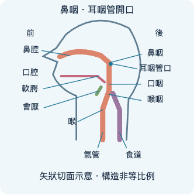
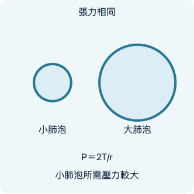
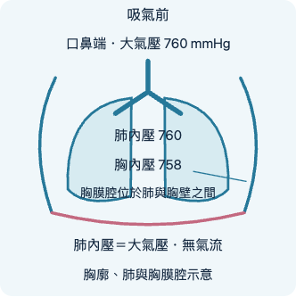
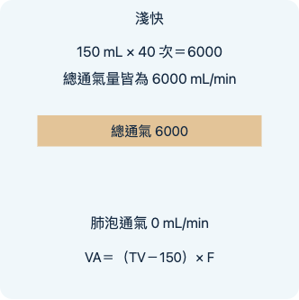
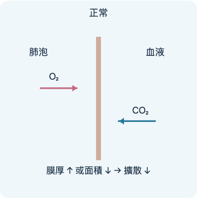
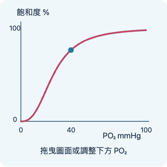
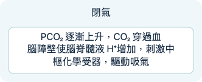

呼吸道的構造
開啟互動預覽 · 桌機節點 · 第一關 · 第二關

肺與胸膜
開啟互動預覽 · 桌機節點 · 第一關 · 第二關

肺通氣與呼吸力學
開啟互動預覽 · 桌機節點 · 第一關 · 第二關

肺容積與肺功能
開啟互動預覽 · 桌機節點 · 第一關 · 第二關

氣體交換
開啟互動預覽 · 桌機節點 · 第一關 · 第二關

氧與二氧化碳的運輸
開啟互動預覽 · 桌機節點 · 第一關 · 第二關

呼吸調節
開啟互動預覽 · 桌機節點 · 第一關 · 第二關
